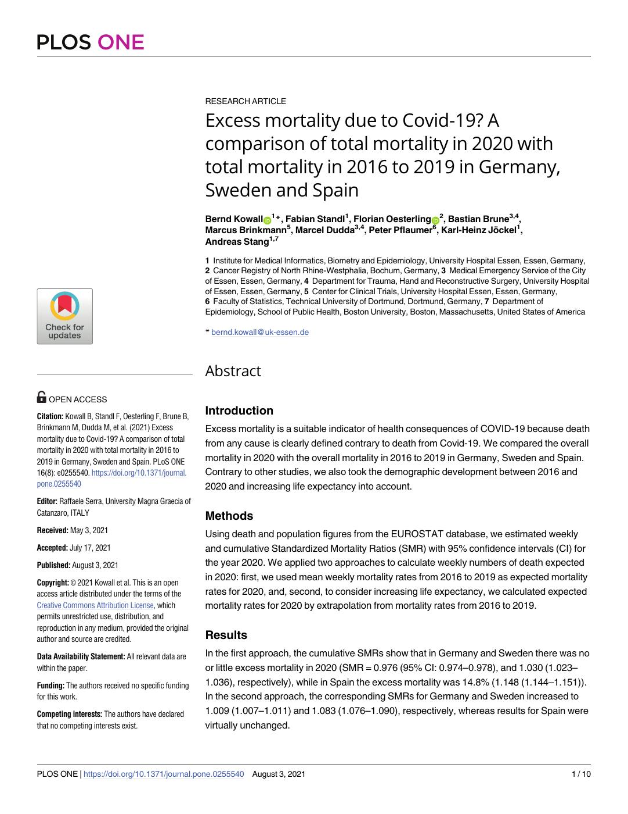
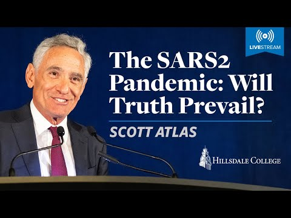
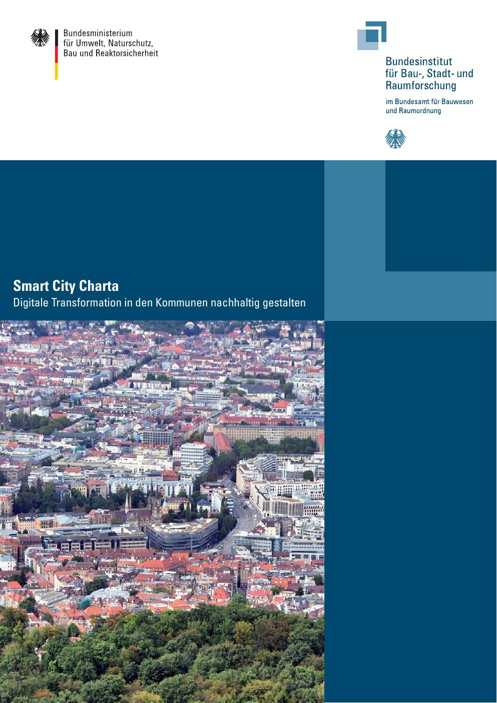

54:25 · 6 OPERE
Bisogna solo aspettare...
Il filo del discorso
Una rassegna polemica delle politiche pandemiche diventa una riflessione sul rapporto fra competenza, autorità e obbedienza. Il relatore parte dall’intervallo dei richiami vaccinali e da uno studio sulla mortalità europea, passa alla conferenza di Scott Atlas e legge alcuni scenari della Smart City Charta come segnali di una trasformazione tecnocratica della democrazia. Platone e Shakespeare offrono il lessico con cui interpreta il potere e la perdita di giudizio. Nella seconda parte commenta il ruolo dei mezzi di comunicazione, un provvedimento ecclesiastico e notizie di morti improvvise, fino alle segnalazioni VAERS. La scheda conserva questa traiettoria argomentativa, distinguendo le opinioni del contributo dalle conclusioni dei documenti: stime di mortalità, scenari politici, necrologi e segnalazioni di farmacovigilanza hanno significati e limiti diversi.
I libri nel discorso

Excess mortality due to Covid-19? A comparison of total mortality in 2020 with total mortality in 2016 to 2019 in Germany, Sweden and Spain
Identificazione probabile
Prima pagina dell’articolo · PLOS ONE, 2021: PLOS ONE 16(8), e 0255540, 3 agosto 2021, DOI 10.1371/journal.pone.0255540, dieci pagine. Prima pagina integrale del PDF editoriale; non è la copertina di un libro.
Pagina iniziale autentica del PDF PLOS ONE, letta e controllata visivamente; titolo, autori, data e DOI riscontrati.
Confronto Germania, Svezia e Spagna: mortalità2020 contro2016–2019; età e aspettativa di vita.
Passaggio 3:35 ↗ · Fonti e libro ↗
The SARS2 Pandemic: Will Truth Prevail?
Anteprima della registrazione ufficiale · conferenza del 24 gennaio 2022: Conferenza del 24 gennaio 2022 al Kirby Center di Hillsdale College, Washington, D.C., organizzata dalla Academy for Science and Freedom. Immagine autentica di anteprima della registrazione indicata dal comunicato ufficiale del 1 febbraio 2022; non è la copertina di un libro.
Anteprima autentica del video indicato dal comunicato Hillsdale. Titolo della conferenza e autore riscontrati nell’immagine; non è un ritratto generico o una trascrizione della presentazione.
Scott Atlas, conferenza sulla SARS2 e sul prevalere della verità; titolo e organizzatore riscontrati.
Passaggio 9:35 ↗ · Fonti e libro ↗
Smart City Charta. Digitale Transformation in den Kommunen nachhaltig gestalten
Copertina della versione estesa · BBSR e BMUB, maggio 2017: Copertina autentica della versione estesa: Smart City Charta, BBSR e BMUB, Bonn, maggio 2017, ISBN 978-3-87994-203-9. PDF di 108 pagine, comprese le copertine, con numerazione interna fino a 106; comprende il contributo di Roope Mokka alle pp. 42–44. Riproduzione pubblica del documento sul blog del Bayerischer Städtetag, distinta dalla versione rivista 2021.
Versione e contenuto 2017 corrispondono alla discussione della pagina 43 nella fonte automatica. Non è certificata l’identità grafica dell’esemplare materialmente mostrato nel filmato. Immagine della pagina 1 del PDF, resa a 120 dpi senza ricomposizioni o modifiche. Credito della fotografia di copertina: DIALOG BASIS / Max Klose, come nel colophon. Aggiornamento del 26 ottobre 2026: sostituisce l’immagine illustrativa 2021 citata nella nota storica della scheda. Tutti i metadati e il file della copertina precedente sono conservati nella storia delle immagini.
Discussione2016 fra70esperti, pubblicazione2017, Charta e pagina43.
Passaggio 18:44 ↗ · Fonti e libro ↗
La Repubblica
Identificazione probabile
Copertina: Laterza · La Repubblica · edizione con testo a fronte di riferimento
Immagine associata all’ISBN di riferimento e controllata visivamente; edizione e traduzione non identificate come quelle citate o lette nel video.
Platone e il tiranno folle: probabile richiamo alla Repubblica, libroIX.
Passaggio 27:29 ↗ · Fonti e libro ↗
Giulio Cesare
Copertina: Feltrinelli · Universale Economica I Classici · 2013
Copertina autentica dell’edizione di riferimento, non attribuita all’esemplare del video.
Shakespeare, Giulio Cesare, giudizio fuggito fra le bestie: discorso di Antonio,III2.
Passaggio 30:26 ↗ · Fonti e libro ↗
Bibbia
Identificazione probabile
Copertina: San Paolo, 2014 · Nuova Versione dai Testi Antichi · edizione di riferimento
Allusione ai lebbrosi e al comportamento di Gesù; passo evangelico probabile.
Passaggio 41:41 ↗ · Fonti e libro ↗Minutaggi ricavati da testi automatici, da riascoltare. Le identificazioni probabili sono segnalate accanto ai libri.